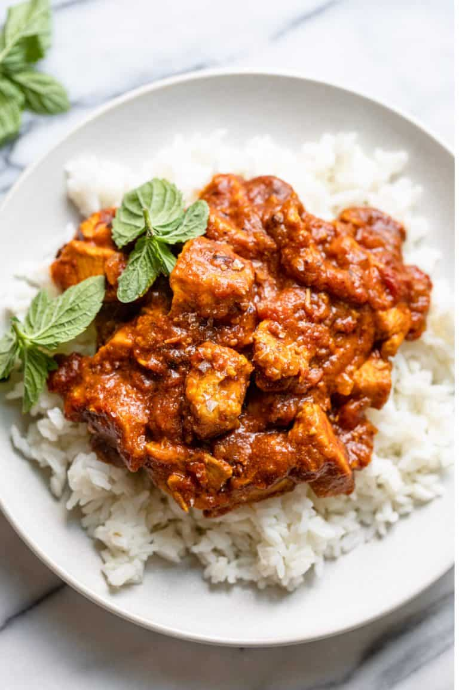

Vegetarian
Non-Vegetarian
Pastas and Soups
Kitchen Essentials
Claire's Cuisine
Sitemap
Contact
Non-Vegetarian Recipes
Filter Recipes:
Asian
American
European
Hispanic
Indian
Mediterranean
North African
Low Carb
Low Calorie
Chicken Curry
Louisiana Red Beans and Rice
Miso Chicken Stir-Fry
American Goulash
Pesto Chicken and Veggies
Cashew Chicken
Jambalaya
Tuscan Chicken and Cauli Rice
Salsa Verde Chicken
Mediterranean Chicken Quinoa Bowl
Thai Coconut Chicken

Quick Chicken Curry
Asian Chicken Salad
Chicken Tikka Masala
Grilled Honey Lime Chicken with Pineapple Salsa


.jpg "chicken tikka masala")